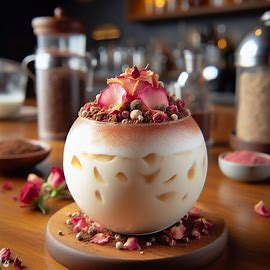
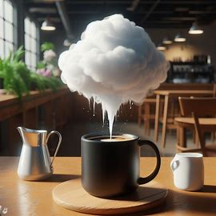
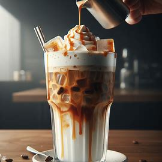
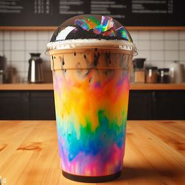
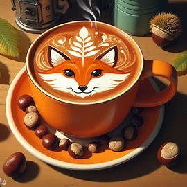
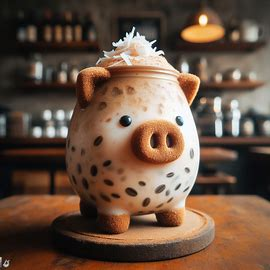
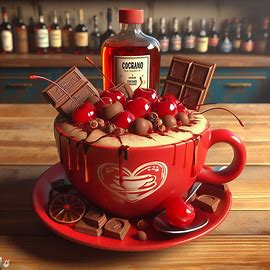

A Napsugár Díj
A Napsugár Díj 2402-ben immár nyolc éve jelenti számunkra a minőség, a kreativitás és a varázslat tökéletes összhangját. Díjunkra bárki jelentkezhet, aki érzi magában a szárnyalásra való hajlamot. A Napsugár Díj elnyeréséhez egy több fordulós verseny vezet, ahol versenyzőink bemutathatják az általuk készített kávékülönlegességeiket döntőbíráinknak. A verseny végeztével a nyertes kézhez kapja a Napsugár Díjat egy életre szóló napsugár kuponnal együtt, és nyertes itala felkerül állandó kínálatunkba.
Korábbi nyerteseink
| Évszám | Nyertes Versenyző | Nyertes Ital |
|---|---|---|
| 2395 | Gyöngyös Boróka | Rózsaszirom Kávé |
| 2396 | Felhő Atlasz | Fellegek Felett |
| 2397 | Tóth Mirabella | Könyvmolyok Kedvence |
| 2398 | Nagy Ágoston | Pihenő Gamer |
| 2399 | Galambos Lilla | Gesztenye Varázs |
| 2400 | Cserfes Károly | Az Évszázad Turmixa |
| 2401 | Kalapos Anna | Szívmelengető |
Nyerteseink italai
Rozsaszirom Kávé
Gyöngyös Boróka 2395-ben ezzel a rózsás finomsággal nyerte el bíráink szívét. Gyümölcsös zamatú kávészemekből válogatott örleményt főzött le espressová, azt keverte el hideg tejjel. Az italt gömb alakú pohárban tárolta, melyet előzetesen megtöltött jégbefagyott rózsaszirmokkal. A kávét tört rózsaborssal és reszelt csokoládéval díszítette. Mi pontosan ugyanezt a receptet követke készítjük az italt. A fotó a 2395-ös verseny döntőjében készült.
Fellegek Felett
Felhő Atlasz 2396-ban ezzel az igazán lenyűgöző és elbűvölő itallal vette le bíráinkat a lábukról. Enyhén mogyorós arumájú válogatott szemekből főzött csöpögtetett stílusú kávét melyet a fiatal boszorkánymester egy, a bögre felett lebegő pamacs vattacukorral és egy kis adag tejjel tálalt. A vattacukor szép lassan olvadozni kezdett a gőzölgő kávé felett, és szép lassan csepegni kezdett, ezzel megízesítve az italt.
Könyvmolyok Kedvence
Tóth Mirabella "Könyvmolyok Kedvence" kávéja egy igazán friss élményt nyújt. Az alkotó elmondása szerint "minden könyvmolynak szüksége van egy jéghideg italra, hogy lenyugtassa magát a forró helyzetek közepette". Mi egyetértünk vele. A karamella és kekszmorzsa különlegesen édesítő egyveleget alkot, melyet a keserű kávé és a hideg tej enyhít.
Pihenő Gamer
Nagy Ágoston tisztában van azzal, hogy még a Gamer-eknek is ki kell mozdulniuk otthonról, hogy felfrissítsék magukat. És mi sem lehetne frissítőbb, mint egy jéghideg Gamer témájú ital. Követve a Gamer trendeket, természetesen ez az ital is a fekete és a szivárvány színeiben pompázik. A fekete tündérpor segít kitsztítani a fejet, így ez az ital tökéletes, ha a koncentrációnkat szeretnénk erősíteni.
Gesztenye Varázs
Galambos Lilla 2399-ben bizonyította számunkra a gesztenye iránti szeretetét ezzel a krémes, habos, szívmelengető gesztenyés ízesítésű lattéval. A latte artot ő maga kísérletezte ki hosszú hónapokon át, és nem is mondhatnánk mást, mint hogy gratulálunk neki az új pumpkin spice Latte megalkotásához.
Az Évszázad Turmixa
Mivel sem lenne jobb kezdeni az új évszázadot, mint egy nagy új évi, szerencsehozó itallal? Cserfes Károly évzsázadi turmixa azonnal levette bíráinkat a lábáról. Az ital alapja kávéból készült jégkása és hideg kókusztej keveréke. Ez az egyszerű de finom ital a különleges elkészítési módnak és az aranyos prezentálásnak köszönheti az első helyet.
Szívmelengető
Kalapos Anna konyakmeggy által inspirált "Szívmelengető" itala bizony a mi szívünket is megmentette a 2401-es versenyen. Ez a meggyes, konyakos kávé keverék tökéletesen reprezentálja a nem túl édes italok csoportját.